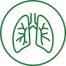

Органы дыхания
-
Гипокситерапия

-
Метод лечения, профилактики и реабилитации, основанный на применении газовой смеси с пониженным
содержанием кислорода, но при обычном давлении. В ходе процедуры пациент поочередно дышит такой смесью и
обычным воздухом. В результате возникает эффект гипоксической гипоксии, что и оказывает лечебный эффект.
-
Ингаляционная гелиокс-терапия
- Современный метод профилактики и лечения острых и хронических
заболеваний бронхолегочной системы, а также других заболеваний внутренних органов. Ингаляции
гелий-кислородными газовыми смесями проводятся через специальный аппарат с маской и газовым баллоном с
целью выведения из гипоксических состояний (дефицит кислорода в тканях и органах) и при заболеваниях,
сопровождающихся гипоксией.
-
Спектральная фототерапия (СФТ) на проекцию органов
- Данный метод доставки необходимых микроэлементов к пораженному органу
с помощью мультиспектральной энергии света cочетает принципы фототерапии и рефлексотерапии. Лечебный
эффект достигается за счет насыщения организма определенными микро- и макроэлементами, которые участвуют
во всех обменных процессах, обеспечивая нормальное функционирование организма.
-
Консультация врача-пульмонолога
-
Врач-пульмонолог занимается профилактикой, диагностикой и лечением органов дыхания (трахеи, бронхов,
легких).
-
Программа «Лечение легких»
- Комплекс взаимосвязанных процедур, направленных на борьбу с вирусными
и инфекционными патологиями бронхолегочной системы. Устраняет последствия заболеваний легких.
Осуществляет профилактику заболеваний.